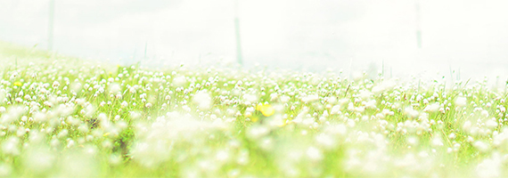
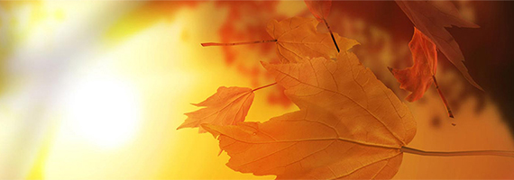

春
盼望着，盼望着，东风来了，春天的脚步近了。
一切都像刚睡醒的样子，欣欣然张开了眼。山朗润起来了，水涨起来了，太阳的脸红起来了。

夏
炎炎夏日的夏季，各类生物已经恢复生机，大都开始旺盛的生命活动。很多生物会在夏季繁殖后代，各种动物选择夏季交配、生育，植物竞相开花结果。这主要是由于在夏季气候最热，各类食物丰富，而且对于卵生动物，卵更易于孵化。
秋
秋季的时候，自然景观最明显的变化在树木上面，城市里会开始清扫大量的落叶，山区则涌进不少观赏红叶的游客们。[1] 秋季[2] ，一年四季的第三季，由夏季到冬季的过渡季，北半球为9至11月，南半球3至5月，天文为秋分到冬至。
